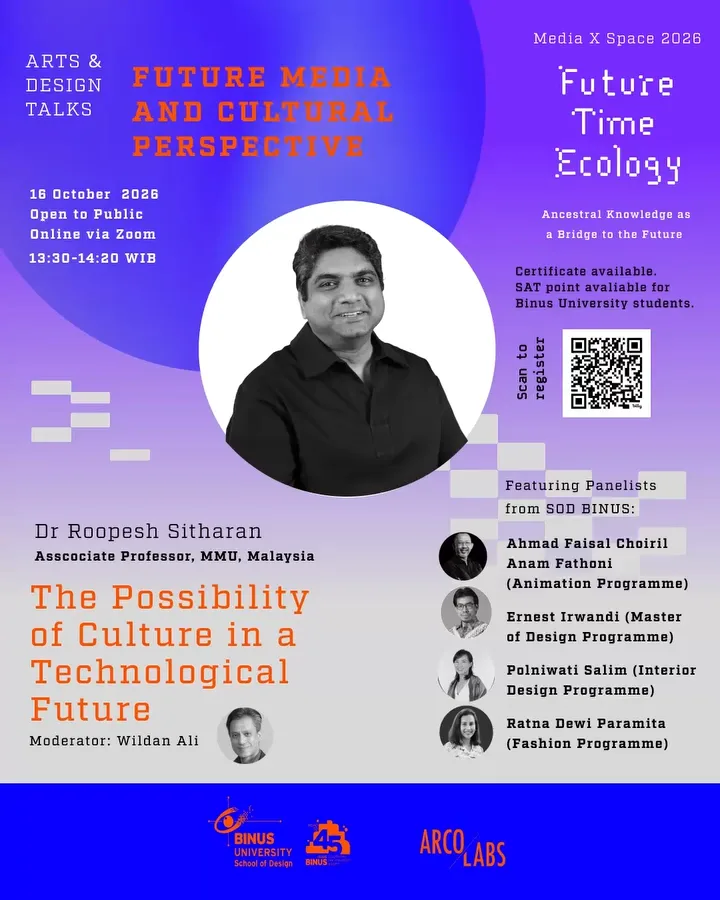

Roopesh Sitharan
, , and , based in Malaysia.
Selected for the ILHAM Art Show 2025 at ILHAM Gallery, Kuala Lumpur. Earlier work at the Gwangju Biennale, ISEA and SIGGRAPH.
Co-curator of Chapalang (Singapore, 2026) and of the peer-reviewed exhibition at the Vietnam Festival of Creativity and Design.
A PhD in Visual Culture from Goldsmiths. Lately: how non-human agents shape our understanding of environment, nature and the “other”.
Associate Professor at the Faculty of Creative Multimedia, Multimedia University, and Director of APARN from 2026.
Between language and art
In his words
I am a multidisciplinary practitioner engaging with art through diverse interrogation strategies, taking on roles such as educator, curator, researcher, and artist.
My work spans national and international projects, including major showcases like the Gwangju Biennale, ISEA, and SIGGRAPH. My writings have been published in respected journals such as Leonardo Electronic Almanac (LEA), CTRL+P Contemporary Art Journal, and Documenta 12.
I have participated in residency programs that focus on research and the role of art in critically addressing real-world issues.
Recently, my work has centered on exploring the influence of non-human agents in shaping our understanding of environment, nature, and the “other,” and how these factors influence human subjectivity.
Roopesh Sitharan
Notes
-

The Possibility of Culture in a Technological FutureArts & Design Talks, School of Design, BINUS University, onlineMain speaker at the Arts & Design Talks: how culture can evolve alongside technology, and what becomes possible when tradition meets innovation.Read the note -
 Local ways of knowing, at Co-LuminaXCo-LuminaX: Co-Creating Light, Mapping Futures, Galeri Filamen, Kuala LumpurA panel on local cosmological worldviews and knowledge in Malaysia, and their place in new media art.Read the note
Local ways of knowing, at Co-LuminaXCo-LuminaX: Co-Creating Light, Mapping Futures, Galeri Filamen, Kuala LumpurA panel on local cosmological worldviews and knowledge in Malaysia, and their place in new media art.Read the note
-
 Living Archives, at Who Speaks?APARN + ADPRex Conference, NAFA, University of the Arts SingaporeDiscussant and moderator of the session Living Archives, on archives as evolving structures rather than fixed records of the past.Read the note
Living Archives, at Who Speaks?APARN + ADPRex Conference, NAFA, University of the Arts SingaporeDiscussant and moderator of the session Living Archives, on archives as evolving structures rather than fixed records of the past.Read the note
-
 Curating with peer reviewVietnam Festival of Creativity and Design, RMIT University VietnamCo-curator, with Rachel Jahja, of a peer-reviewed exhibition: what can a curator do when the works are chosen by reviewers?Read the note
Curating with peer reviewVietnam Festival of Creativity and Design, RMIT University VietnamCo-curator, with Rachel Jahja, of a peer-reviewed exhibition: what can a curator do when the works are chosen by reviewers?Read the note
Writing
- 2026Minecraft as a site of memory and collaborative learning during the COVID-19 pandemicDigital Creativity · Article (opens in a new tab)
- 2026Akousis: An AI-Driven Sonification of Botanical TaxonomyARTECH 2025, 12th International Conference on Digital and Interactive Arts · Conference paper (opens in a new tab)
- 2023Transgression and New Media in the Study of ArtInternational Journal of Creative Multimedia · Article (opens in a new tab)
- 2023Aku manjadi saksi kepada-lo que estoy pensandoChapter (opens in a new tab)
- 2020ANTARA: In-between Language and ArtInternational Journal of Creative Multimedia · Article (opens in a new tab)
Now
- DirectorAsia Pacific Artistic Research Network (APARN)From 2026; convenor since 2024
- Board of DirectorsNew Media Caucus, New York2023 to present
- Associate ProfessorFaculty of Creative Multimedia, Multimedia UniversityPresent; also Program Director, Master of Creative Multimedia
- Deputy Director for International Collaboration and EngagementMultimedia University2022 to present